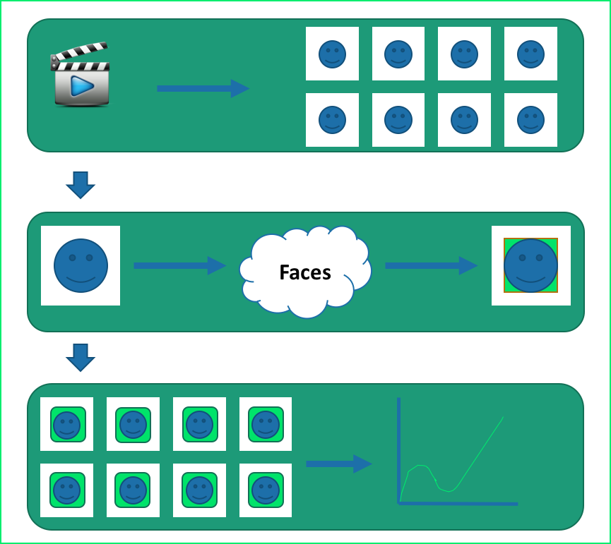
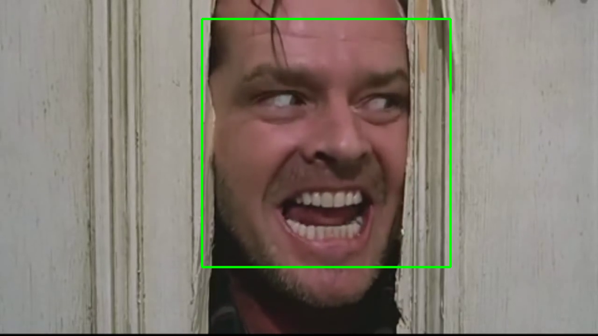

ABOUT:
Faces is a facial and sentimental recognition program. Through the input of small video files, the Faces program is able to grab various images and locate faces, analyze the current facial emotion, and report a sentimental score based on the analyzed expression.
Components:
Faces is built through a Python framework with the assistance of web services. Faces makes use Google Cloud APIs such as Google Vision. Faces also uses the Django Python web framework for maintaining the web services and also an internal database. Faces uses FFmpeg to break down video files into a subfolder of image captures.


Methodology:
Faces makes use of all its connected components throughout the application. The process of Faces can be broken down into 6 functions. Through the web interface of Faces, the user can upload a video or image file to score. In the case of a video file input, Faces utilizes the FFmpeg framework, and captures images from the video at a predetermined time instance. For the instance of this project, the time is set to every 2 seconds. These image captures are placed into a subfolder to be processed through the Faces application. Faces will cycle through each image and perform the facial recognition process. First, the image will be scanned with the assistance of the Google Vision API for any facial detection. If a face is successfully found, the application will output the sentiment found from the expression. The found sentiment will be recorded and the image will be labeled. The application repeats this process for the remaining images. Once all images have been scanned, Faces will produce an overall sentiment score for the video and will be outputted for the viewing of the user.
Results:
Overall, the results of this project was highly successful. Faces accomplishes the initial goal that was established for the project. The program can successfully detect a face from inputted video files and can produce an approximate emotion felt by the image. The Google Vision API is a part of Google’s machine learning and it was able to be observed over the course of the semester that the API would return different sentiments felt for the same picture. This was recognized through various images such as the one seen in the image below. Over the course of this semester, there would be test runs where the API returned a sentiment value of Joy for this image. The initial hypothesis was that the Vision API saw the teeth from the image and the first sentiment that was associated with this is Joy. We inquired about anyway to inform the API of this problem; however, there was no available option for this. We also found that for a majority of images, the Vision API would return a sentiment of Joy. This was found to be intriguing due to knowing that a certain image was not joyful. Again, we tried to see if there was any way to alter this output, but there was not. Aside from this, the project was found to be successful and it accomplishes its goal.
Conclusion:
Faces initially was exclusive to the Google App Engine API. Due to difficulties, a transition deemed necessary. Through research and trial, the Django framework proved to provide all necessary features. With the use of all components, Faces successfully accomplishes its original objectives and can be carried onward to bigger and better goals.